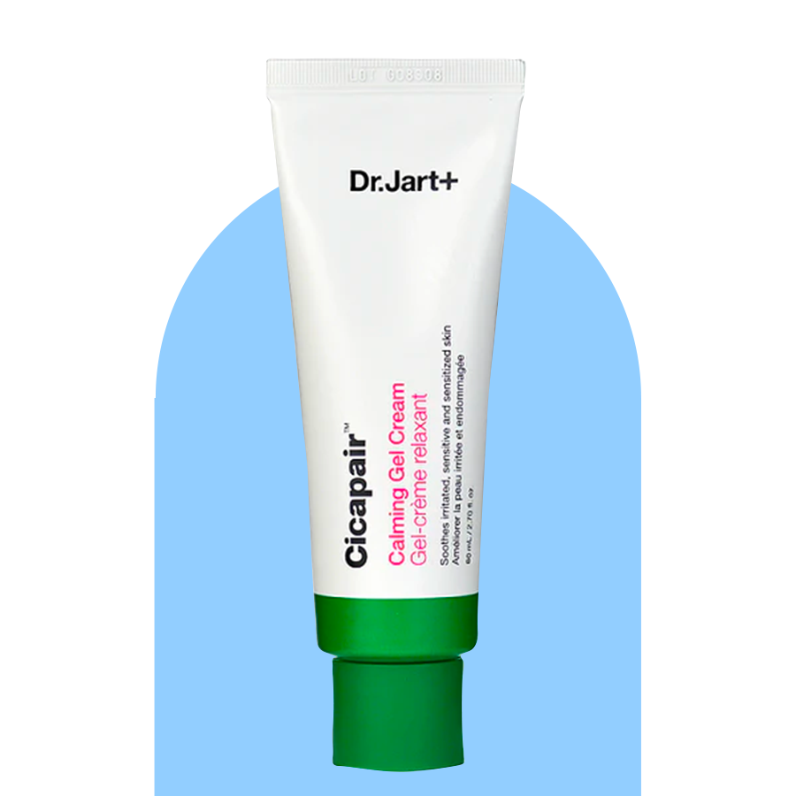

Product Recommendations for Normal Skin
1. Kiehl's Daily Refining Milk Peel Toner
Gentle enough for daily use, the
milk-peel toner refines and restores for
replenished, healthy-looking skin. This
dual-action exfoliating toner formulated
with Lipo Hydroxy Acid and 23% Emollients,
including Almond Milk, lightly exfoliates
and dissolves impurities while replenishing
the skin’s moisture levels for a clear
complexion and a smooth, comfortable feel.

Exfoliater
Ingredients
Aqua/Water, Hydrogenated Polydecene, Caprylic/Capric
Triglyceride, Squalane, Carthamus Tinctorius Seed
Oil/Safflower Seed Oil, 1,2-Hexanediol, PEG-6
Caprylic/Capric Glycerides, PEG-40 Glyceryl
Cocoate, Phenoxyethanol, Sodium Coceth Sulfate,
Capryloyl Salicylic Acid, Tromethamine,
Ethylhexylglycerin, Citrus Nobilis Peel Oil/Mandarin
Orange Peel Oil, Adenosine, Limonene, Caprylyl Glycol,
Anthemis Nobilis Flower Oil, Cupressus Sempervirens
Leaf/Nut/Stem Oil, Prunus Amygdalus Dulcis Seed
Extract/Sweet Almond Seed Extract, Benzyl Alcohol,
Xanthan Gum, Silybum Marianum Extract, Tocopherol,
Dehydroacetic Acid, Lactic Acid.
2. Cetaphil Gentle Skin Cleanser
This mild cleansing formula is clinically
tested to be gentle at removing dirt, makeup,
and impurities while preserving skin’s natural
moisture barrier.
3. Innisfree Retinol Cica Moisture Recovery Serum
A gentle, effective daily retinol serum with
soothing Centella asiatica (Cica) that
visibly smooths away dead skin cells and
build up from pores, to help promote healthy
skin turnover.
3. NOVA 15% Vitamin C + Turmeric Brightening Serum
A potent brightening serum that combines the
clinical strength of 15% THD vitamin C with
super root turmeric to visibly improve dark
spots and even skin tone while being gentle
on skin.
4. La Roche Posay Hyalu B5 hyaluronic Acid Anti-agin Face Serum
The unique pro-skin recovery formula helps
repair by replenishing the skin’s moisture
barrier and activate skin renewal. It
combines concentrated 2 types of pure
hyaluronic acid, vitamin B5 and madecassoside
for optimal effectiveness while also being
suitable for sensitive skin.
5. Paula's Choice BHA 9 Treatment
The unique pro-skin recovery formula helps
repair by replenishing the skin’s moisture
barrier and activate skin renewal. It
combines concentrated 2 types of pure
hyaluronic acid, vitamin B5 and madecassoside
for optimal effectiveness while also being
suitable for sensitive skin.
6. Dr.Jart Cicapair Sensitive Skin
A silky, cream moisturizer with an advanced
Cica Complex. This face cream instantly soothes
redness and rapidly.

7. CerVe Ultra-Light Moisturizing Lotion SPF 30
A lightweight moisturizer with SPF that’s
non-comedogenic is an essential skincare product
for normal to oily skin. In addition to helping
prevent sunburn, an ideal oil-free moisturizer
with sunscreen should include ingredients like
Ceramides and Hyaluronic Acid.